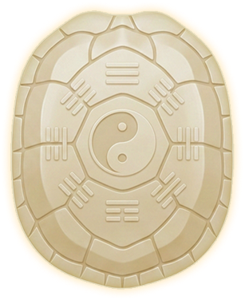
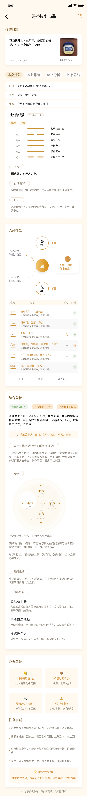
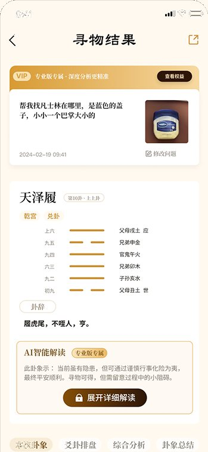
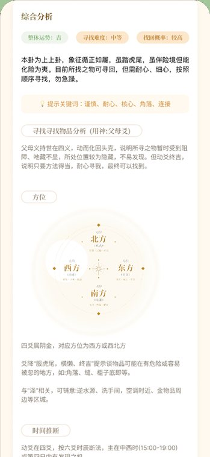
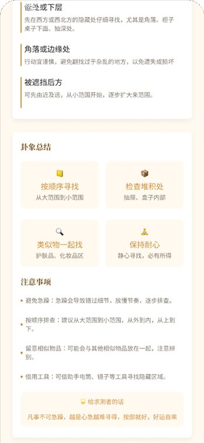
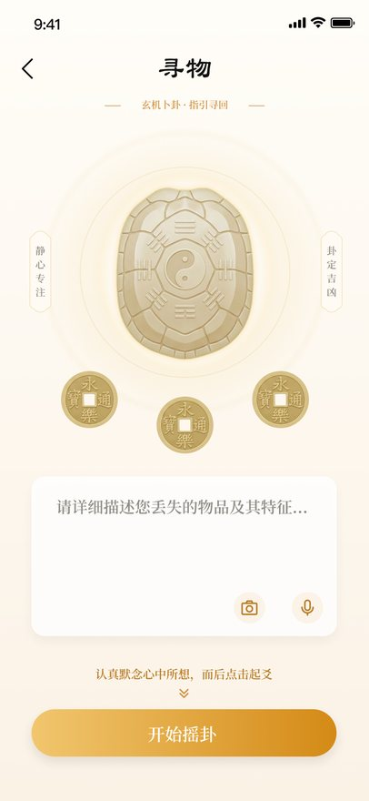

UI/UX 设计案例 · 移动端 App · 2026
让 AI 把卦象，
翻译成看得懂的行动建议。
一款结合传统六爻与 AI 解读的移动 App。丢了东西或遇到难题时，只需描述问题、摇一卦，就能得到可能的方位、时间和寻找顺序。本案例呈现从需求梳理、设计规范、组件库到核心页面的完整设计过程。

设计挑战
用户不懂卦，
只想知道下一步怎么做
卦象原文专业，但难懂
- 天泽履第十卦 · 上上卦
- 九五兄弟申金 · 世
- 用神父母爻持世
- 动爻动而化回头克
用户看到的直接能用
- 方位西方 · 西北方
- 先找低处或下层
- 时间申酉时 15:00–19:00
- 找回概率较高
- 目标用户
- 对玄学感兴趣的年轻用户
- 产品目标
- 更快找回物品，为决定提供参考
- 设计关键词
- 东方美学 · 温润 · 信任感
四个痛点，四个解法
设计流程
01
定义目标
- Brief 输入输入
写清用户、功能、风格与交付要求，给 AI 设好边界。
产出需求 Brief
02
搭建结构
- GPT 拆解需求AI
- 产品文档输出输出
- 页面框架生成输出
GPT 拆出功能与页面清单，设计师定 P0 / P1 优先级。
产出PRD · 页面框架
03
生成内容
- 设计规则转译AI
- Codex × Figma 搭组件AI
设计师定规则，Codex 解析母稿，Figma 批量搭组件。
产出设计规范 · 组件库
04
优化交付
- 页面批量生成输出
- 人工优化与交付人工
批量生成后逐屏检查文案、状态与一致性。
产出Figma 源文件
AI 辅助搭建组件库
让 AI 整理规则，
规范与组件放在一处
借助 AI 辅助搭建组件库，高效输出标注与开发说明，缩短设计落地周期；还能按规范衍生新组件，适配后续产品迭代与新增功能。设计规范、字体样式与组件库统一收在同一个 Figma 文件中。
用 Codex 解析母稿、提炼规范，省去人工逐个画点，统一全稿隐性设计规则。
由 Codex 导出的标准化规范驱动 Figma 批量生成组件，大幅压缩组件搭建与改版工时。
点击截图查看大图
调用 Figma 分析设计母稿
导入项目原始设计稿，由 Codex 自动提取稿件内的颜色、字号、边距、圆角、控件尺寸等零散数据，整理成设计规范，剔除原稿中不统一的非标样式，输出标准化色卡、文字规范和间距规则，省去人工逐一丈量统计。
再把这套统一规范同步到 Figma 样式库，批量生成按钮、卡片、输入框等基础组件及多状态变体。采用主组件联动机制，修改主样式即可全页面同步更新，快速落地完整组件库。
首页
打开就知道，
从哪里开始
首页要同时放下 7 个功能和当日卦象，最大的风险是用户找不到起点。解法是一个主入口 + 一组功能卡片建立优先级，再用色块和留白区分模块。
清晰的功能入口
所有主要功能在首屏可见，减少查找和思考成本。
信息层级与视觉引导
主入口用金色按钮，功能卡片用不同底色区分。
低学习成本
每张卡片一句话说明用途，不用读说明就能上手。
继续向下滚动，查看下一个区域1 / 4
摇卦排盘
把等待，变成一场仪式
起卦是整个产品最有文化感的一刻，也是用户最容易失去耐心的一刻。设计上用龟甲和铜钱承载仪式感，用逐爻出现的线条和进度点告诉用户「还差几步」。

龟甲与铜钱
点击龟甲或摇晃手机起爻，铜钱翻转动画给出即时反馈。
逐爻生成
六条爻自下而上出现，阴阳一目了然，动爻用红色标记。
右侧是可以操作的网页原型，试着起一卦
— 玄机卜卦 · 指引寻回 —
点击龟甲或摇晃手机起爻
已起爻 0 / 6
- 初爻
- 二爻
- 三爻
- 四爻
- 五爻
- 上爻
结果页
结论先行，
细节按需展开
结果页信息量最大：卦象、排盘、分析、方位、建议。按「结论 依据 行动」排序，用四个标签分层，再把方位和寻找顺序做成可视化。点击下面的条目，右侧手机会滚动到对应模块。

可在手机内直接滚动 · 已阅读 0%
全部页面
按住可左右拖动预览






